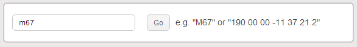

Name Resolver
The name resolver is meant to be used in conjunction with the Google Sky Viewer. Entering the name of a celestial object or coordinate causes the sky viewer to immediately pan to that location.
Coordinates must be entered as RA and DEC and can be in either decimal or HMS format:
00 00 00.0 +00 00 00.0
or
00:00:00.0 +00:00:00.0
or
0.0 +0.0
Note that the DEC must be specified with a + or - sign.